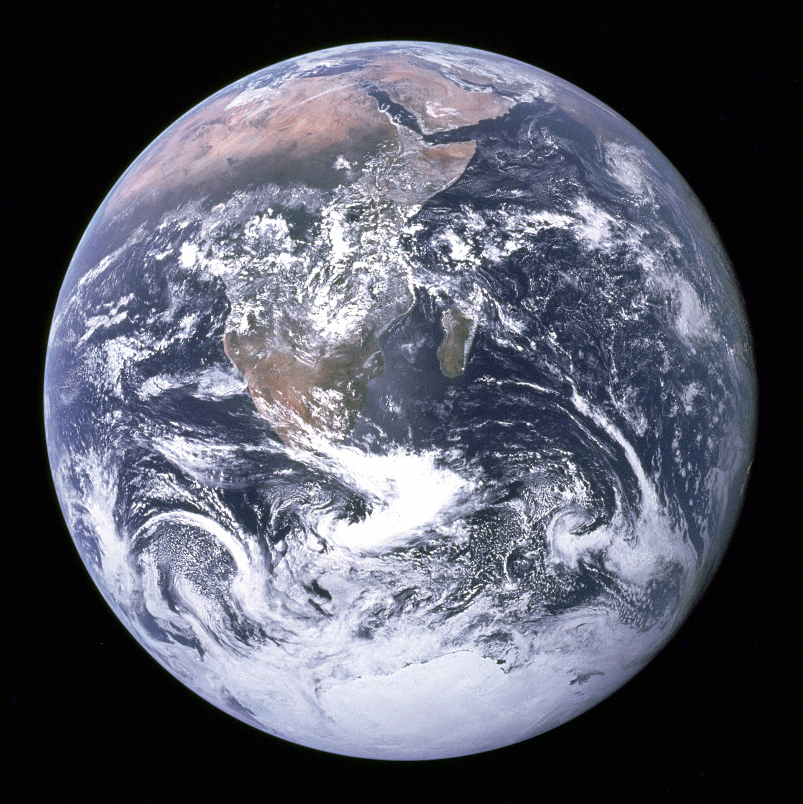
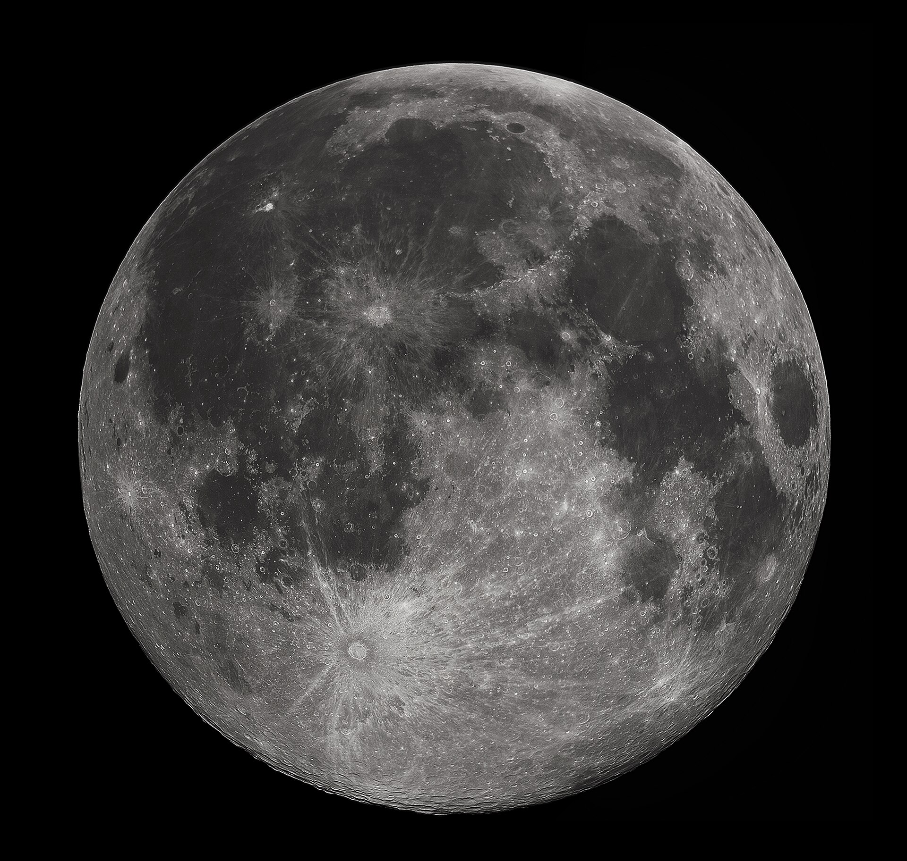
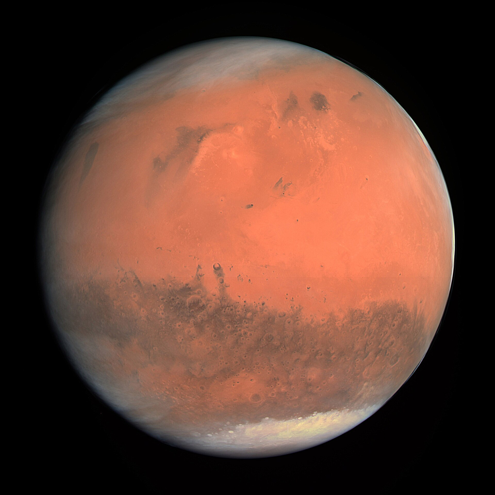
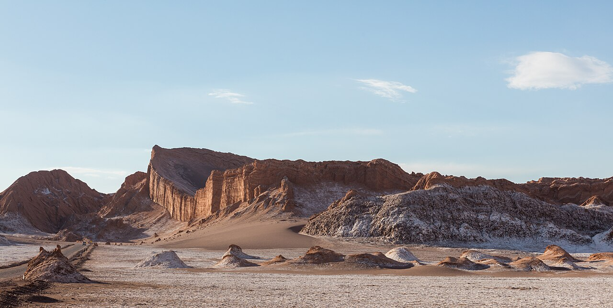
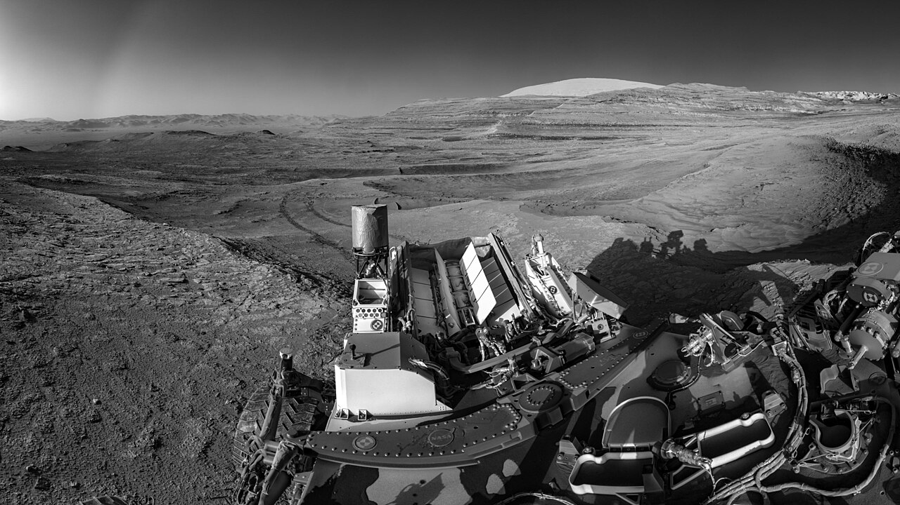
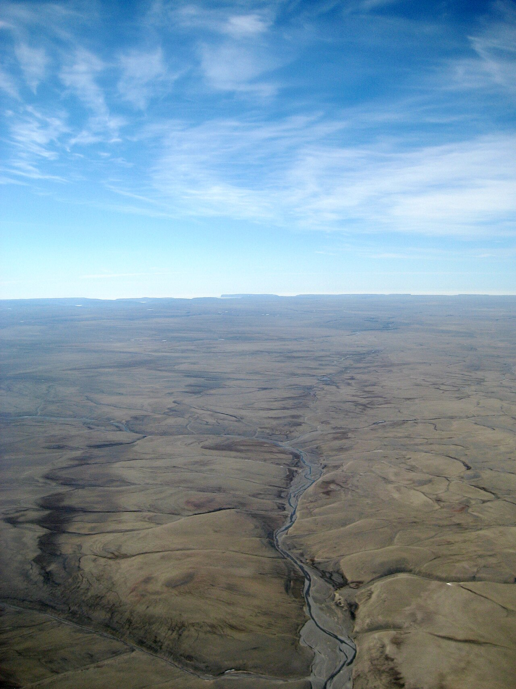

Earth's extreme deserts and volcanic basins mirror Mars and the Moon.



Maharashtra, India · 470m Elevation [19.97°N, 76.51°E]
Pristine hypervelocity impact basin in flood basalt Deccan Traps with shock-metamorphosed maskelynite.



Other worlds are closer than you think.